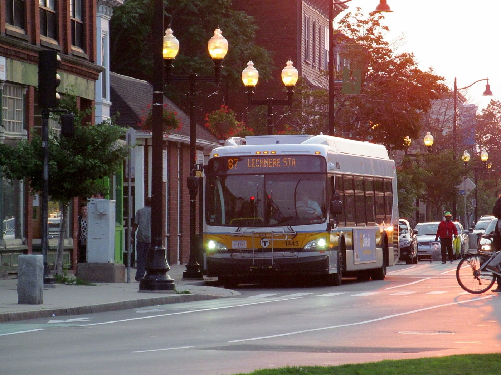
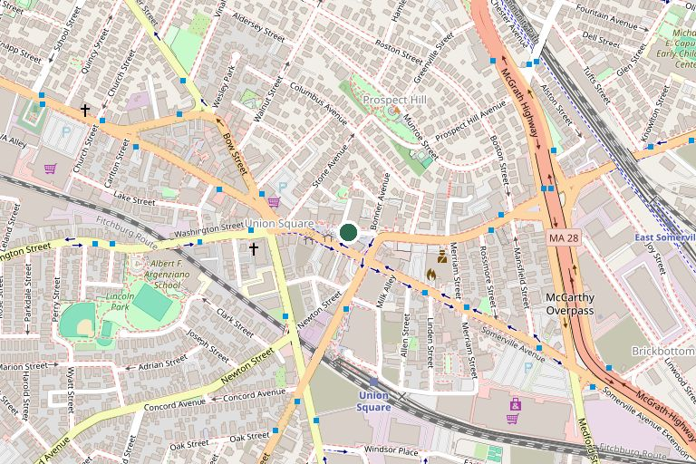

Group ride · Boston Cafe Bikers
Better Not Miss Butternut
Sat 21
November, 10:00 AMStart
Union Square Bluebikes, 61 Union SqEnd
Butternut BakehouseNo-drop. The host asks everyone to sign up first.

Union Square. Photo: Pi.1415926535, CC BY 3.0
Getting to the start
TBusBikeWalk
Green Line D branchRide to Union Square, the end of the line
Union Square stationWalk up Prospect St to the square
Union Square Bluebikes dockLook for the group by the bikes
Where you meet

© OpenStreetMap contributors